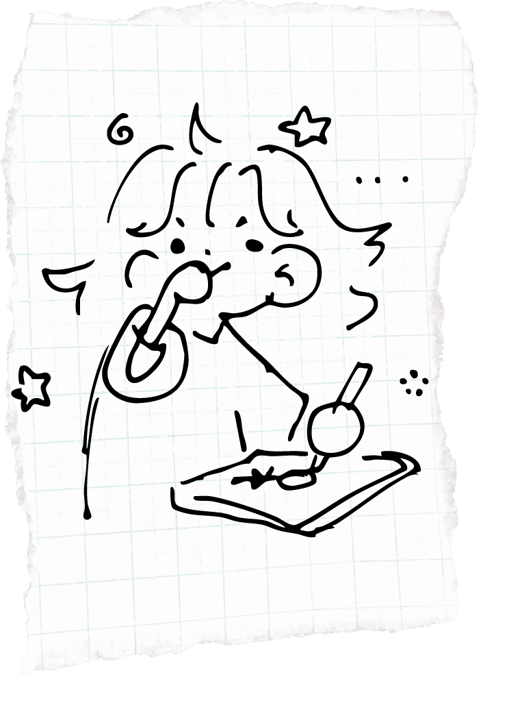

hi
i'm
daisy!
I'm a UX Researcher, Designer,and Developer. I design for accessibility, for inclusivity, and for fun. Welcome to my space in the World Wide Web.


Thanks for stopping by! Feel free to connect, check out my work, or leave a message!
To find out more about me and my journey in tech, feel free to check out my resume or bio.